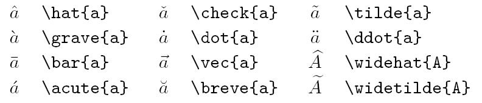
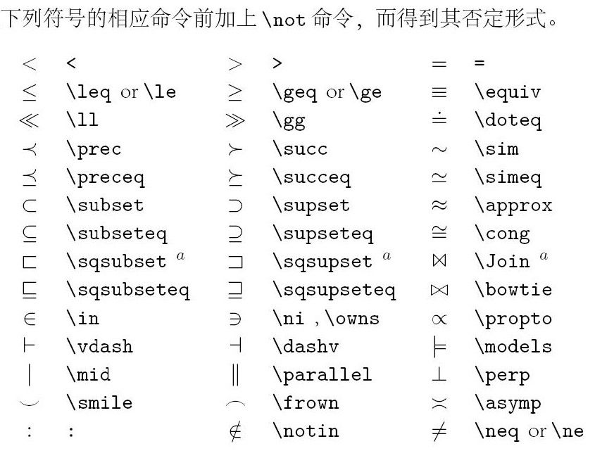
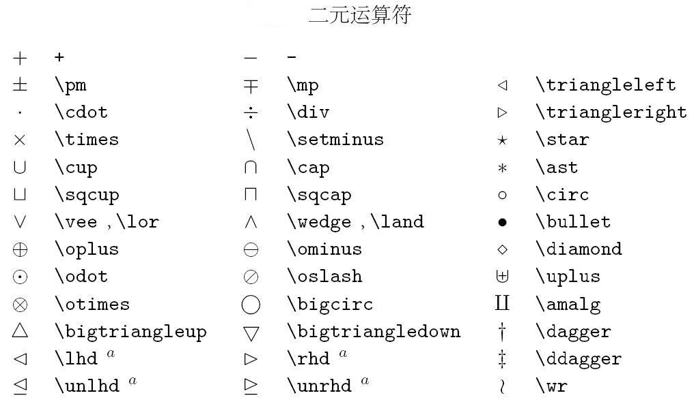
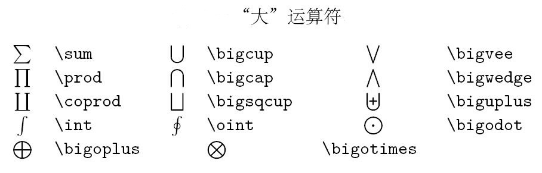
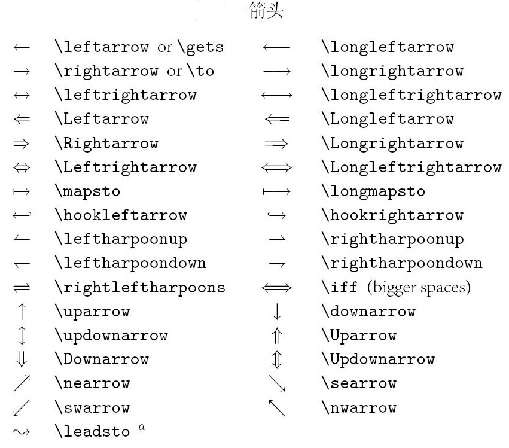
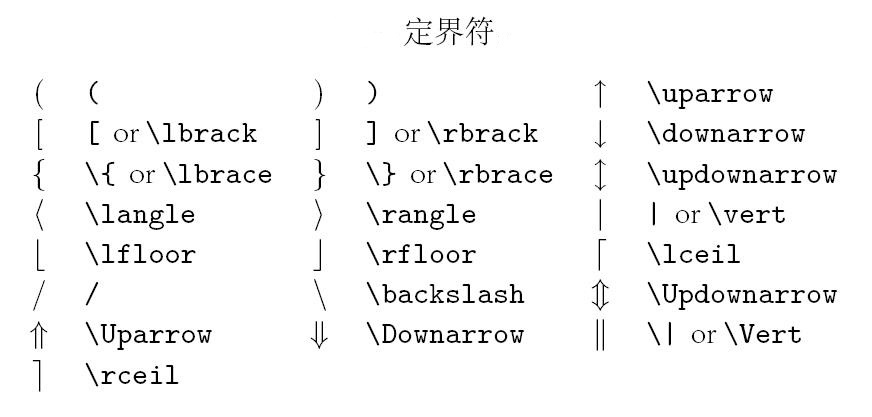
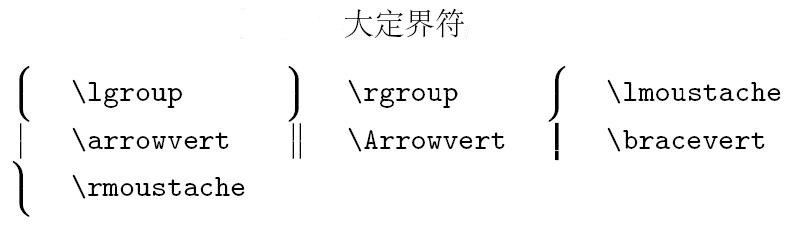
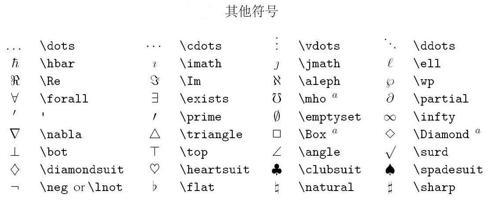

最近在学习机器学习和神经网络的一些知识, 在用Markdown做笔记的时候, 发现公式用到LaTeX十分方便, 写篇文章记录在学习过程中的常用的LaTeX公式和用法, 因为本博客支持MathJax, MathJax是一款运行在浏览器中的开源的数学符号渲染引擎，使用MathJax可以方便的在浏览器中显示数学公式，MathJax可以解析Latex、MathML和ASCIIMathML的标记语言。
关键字索引
\ 或者~: 空格
\verb +text+ : 直接打印不执行任何LATEX命令。这里的+仅是分隔符的一个例子, 除了* 或空格，可以使用任意一个字符。
\url{www.baidu.com} : 嵌入超链接, 可在文档中点击访问
\emph{text} : 强调的内容
\section{...} : 章
\subsection{...} : 节
\subsubsection{...} : 子节
\paragraph{...} : 段落
\subparagraph{...} : 子段落
`text' : 单引号
text'' : 双引号引起来的text
-- : 折线
基本概念
控制序列: 以
\开头,参数：必须参数{}和可选参数[]环境: 以
bengin 环境名开始，并以end 环境名结束文本模式:如果你想要在公式中排版普通的文本，那么你必须要把这些文本放在
\textrm{...}命令中数学模式
内嵌模式:公式直接放在文字之间，公式高度一般受文本高度限制:
$ latex $文字\(\sum_{i=0}^{n}i^2\) 文字
独立模式:公式另起一行，高度可调整
文字\[\sum_{i=0}^{n}i^2\]文字
在LaTeX中，花括号是用于分组，即花括号内部文本为一组, 大括号能消除二义性, 一个组即单个字符或者使用{..}包裹起来的内容。
上标与下标
上标
^{角标}，下标_{角标}, 默认情况下，上下标符号仅仅对下一个组起作用。x_1: \(x_1\)x_1^2: \(x_1^2\)x^{2_1}: \(x^{2_1}\)x_{(22)}^{(n)}: \(x_{(22)}^{(n)}\)
分式
\frac{分子}{分母}\frac ab: \(\frac ab\)\frac{x+y}{2}: \(\frac{x+y}{2}\)\frac{1}{1+\frac{1}{2}}: \(\frac{1}{1+\frac{1}{2}}\)
根式
开平方：
\sqrt{表达式}；开n次方：\sqrt[n]{表达式}\sqrt{2}<\sqrt[3]{3}: \(\sqrt{2}<\sqrt[3]{3}\)\sqrt[4]{\frac xy}：\(\sqrt[4]{\frac xy} \)\sqrt{1+\sqrt[^p]{1+a^2}}: \(\sqrt{1+\sqrt[^p]{1+a^2}}\)
求和与积分
求和
\sum; 求积分\int; 上下限就是上标和下标\int_1^\infty：\(\int_1^\infty\)\int_a^b f(x)dx: \(\int_a^b f(x)dx\)\sum_1^n：\(\sum_1^n\)\sum_{k=1}^n\frac{1}{k}: \(\sum_{k=1}^n\frac{1}{k}\)
微分
\frac{\partial E_w}{\partial w} : \(\frac{\partial E_w}{\partial w}\)
\[\frac{\partial E_\hat{w}}{\partial \hat{w}}= 2X^T(X\vec{\hat{w}}-\vec{y}) = 0\]
加粗
\mathbf{x}_i :\(\mathbf{x}_i\)
多重积分
- 对于多重积分，不要使用
\int\int此类的表达，应该使用\iint,\iiint等特殊形式。效果如下：
\[
\begin{array}{cc}
\mathrm{Bad} & \mathrm{Better} \\\\
\hline \\\\
\int\int_S f(x)\,dy\,dx & \iint_S f(x)\,dy\,dx \\\\
\int\int\int_V f(x)\,dz\,dy\,dx & \iiint_V f(x)\,dz\,dy\,dx
\end{array}
\]
- 在微分前应该使用
\,来增加些许空间，否则\(\TeX\)会将微分紧凑地排列在一起。如下：
\[
\begin{array}{cc}
\mathrm{Bad} & \mathrm{Better} \\\\
\hline \\\\
\iiint_V f(x)dz dy dx & \iiint_V f(x)\,dz\,dy\,dx
\end{array}
\]
特殊函数与符号
- 常见的三角函数，求极限符号可直接使用
\+缩写即可\sin x,\arctan x,\lim_{1\to\infty}: \(\sin x\),\(\arctan x\),\(\lim_{1\to\infty}\) - 比较运算符：
\lt \gt \le \ge \neq： \(\lt \gt \le \ge \neq\)- 在这些运算符前面加上
\not\not\lt：\(\not\lt\)
- 在这些运算符前面加上
\times \div \pm \mp：\(\times \div \pm \mp\)\cdot表示居中的点x \cdot y: \(x \cdot y\)。- 集合关系与运算
\cup \cap \setminus \subset \subseteq \subsetneq \supset \in \notin \emptyset \varnothing：\(\cup \cap \setminus \subset \subseteq \subsetneq \supset \in \notin \emptyset \varnothing\) - 排列
{n+1 \choose 2k}: \({n+1 \choose 2k}\)\binom{n+1}{2k}: \({n+1 \choose 2k}\) - 箭头：
\to \rightarrow \leftarrow \Rightarrow \Leftarrow \mapsto: \(\to \rightarrow \leftarrow \Rightarrow \Leftarrow \mapsto\) - 逻辑运算符
\land \lor \lnot \forall \exists \top \bot \vdash \vDash：\(\land \lor \lnot \forall \exists \top \bot \vdash \vDash\) \star \ast \oplus \circ \bullet： \(\star \ast \oplus \circ \bullet\)\approx \sim \cong \equiv \prec： \(\approx \sim \cong \equiv \prec\)\infty \aleph_0: \(\infty \aleph_0\)\nabla \partial: \(\nabla \partial\) \Im \Re \(Im \Re\)- 模运算
\pmodea\equiv b\pmod n：\(a\equiv b\pmod n\) \ldots与\cdots区别是dots的位置不同，ldots位置稍低，cdots位置居中a_1+a_2+\cdots+a_n: \(a_1+a_2+\cdots+a_n\)a_1, a_2, \ldots ,a_n: \(a_1, a_2, \ldots ,a_n\)。一些希腊字母具有变体形式
\epsilon \varepsilon: \( \epsilon \varepsilon\)
\phi \varphi: \(\phi \varphi\)
- 使用Detexify在网页上画出符号，Detexify会给出相似的符号及其代码但是不能保证它给出的符号可以在MathJax中使用，你可以参考supported-latex-commands确定MathJax是否支持此符号。
空格 : 美化公式
紧贴a!b : \(a!b\)
没有空格ab : \(ab\)
小空格a\,b : \(a\,b\)
中等空格a\;b : \(a\;b\)
大空格a\ b : \(a\ b\)
quad空格a\quad b : \(a\quad b\)
两个quad空格a\qquad b : \(a\qquad b\)
原公式:\int_a^b f(x)\mathrm{d}x
\(\int_a^b f(x)\mathrm{d}x\)
插入空格:\int_a^b f(x)\qquad \mathrm{d}x
\(\int_a^b f(x)\qquad \mathrm{d}x\)
括号
- 小括号与方括号：使用原始的
( )，[ ]即可，如(2+3)[4+4]：\((2+3)[4+4]\) - 大括号：时由于大括号{}被用来分组，使用\lbrace 和\rbrace来表示
\lbrace a*b \rbrace：\(\lbrace a*b \rbrace\) - 尖括号：使用
\langle和\rangle表示左尖括号和右尖括号\langle x \rangle：\(\langle x \rangle\) - 上取整：使用
\lceil和\rceil表示\lceil x \rceil：\(\lceil x \rceil\) - 下取整：使用
\lfloor和\rfloor表示\lfloor x \rfloor：\(\lfloor x \rfloor\) 不可见括号：使用
.表示
注意 : 原始符号并不会随着公式大小缩放。如，
(\frac12)：\((\frac12)\)。可以使用\left(…\right)来自适应的调整括号大小。
如1.1和1.2公式，公式1.2中的括号是经过缩放的。\lbrace \sum_{i=0}^n i^2 = \frac{(n^2+n)(2n+1)}{6} \rbrace \tag{1.1}
\[\lbrace\sum_{i=0}^n i^2 = \frac{(n^2+n)(2n+1)}{6}\rbrace\tag{1.1}\]\left \lbrace \sum_{i=0}^n i^2 = \frac{(n^2+n)(2n+1)}{6} \right\rbrace \tag{1.2}
\[\left \lbrace \sum_{i=0}^n i^2 = \frac{(n^2+n)(2n+1)}{6} \right\rbrace\tag{1.2}\]定界符之前冠以 \left（修饰左定界符）或 \right（修饰右定界符），可以得到自适应缩放的定界符，它们会根据定界符所包围的公式大小自适应缩放
\left( \sum_{k=\frac{1}{2}}^{N^2}\frac{1}{k} \right)
\[ \left( \sum_{k=\frac{1}{2}}^{N^2}\frac{1}{k} \right) \]诸如()、[]、{}、|等分割公式的称为定界符，前面加上\big，\Big，\bigg，\Bigg可以放大这些符号，我比较喜欢用自适应的放大命令，
\left...\right，例如$$\left. \frac{\partial f(x, y)}{\partial x}\right|_{x=0}$$\[\left. \frac{\partial f(x, y)}{\partial x}\right|_{x=0}\]
字体
- 使用
\mathbb或\Bbb显示黑板粗体字，此字体经常用来表示代表实数、整数、有理数、复数的大写字母。\mathbb{CHNQRZ}: \(\mathbb{CHNQRZ}\)。 - 使用
\mathbf显示黑体字\mathbf{ABCDEFGHIJKLMNOPQRSTUVWXYZ}$，$\mathbf{abcdefghijklmnopqrstuvwxyz}\(\mathbf{ABCDEFGHIJKLMNOPQRSTUVWXYZ}\)，\(\mathbf{abcdefghijklmnopqrstuvwxyz}\) - 使用
\mathtt显示打印机字体\mathtt{ABCDEFGHIJKLMNOPQRSTUVWXYZ}$，$\mathtt{abcdefghijklmnopqrstuvwxyz}\(\mathtt{ABCDEFGHIJKLMNOPQRSTUVWXYZ}\)，\(\mathtt{abcdefghijklmnopqrstuvwxyz}\) - 使用
\mathrm显示罗马字体\mathrm{ABCDEFGHIJKLMNOPQRSTUVWXYZ}$，$\mathrm{abcdefghijklmnopqrstuvwxyz}\(\mathrm{ABCDEFGHIJKLMNOPQRSTUVWXYZ}\)，\(\mathrm{abcdefghijklmnopqrstuvwxyz}\) - 使用
\mathscr显示手写体, 无小写\mathscr{ABCDEFGHIJKLMNOPQRSTUVWXYZ}, $\mathscr{abcdefghijklmnopqrstuvwxyz}\(\mathscr{ABCDEFGHIJKLMNOPQRSTUVWXYZ}, \)\mathscr{abcdefghijklmnopqrstuvwxyz}$ - 使用
\mathfrak显示Fraktur字母（一种德国字体）\mathfrak{ABCDEFGHIJKLMNOPQRSTUVWXYZ}$, $\mathfrak{abcdefghijklmnopqrstuvwxyz}\(\mathfrak{ABCDEFGHIJKLMNOPQRSTUVWXYZ}\),\(\mathfrak{abcdefghijklmnopqrstuvwxyz}\)
方程组
使用
\begin{array} ... \end{array}与\left\{…\right.配合，表示方程组使用
\being{aligned} .. \end{aligned}
\[
\begin{aligned}
\dot{x} & = \sigma(y-x) \\\
\dot{y} & = \rho x - y - xz \\\
\dot{z} & = -\beta z + xy
\end{aligned}
\]
- 使用
\being{case} .. \end{case}
\[
\begin{cases}
a_1x+b_1y+c_1z=d_1 \\\
a_2x+b_2y+c_2z=d_2 \\\
a_3x+b_3y+c_3z=d_3
\end{cases}
\]
- 对齐方程组中的
=号, 注意{要转义,'\{'
\[ \left\\{
\begin{aligned}
a_1x+b_1y+c_1z &=d_1+e_1 \\\
a_2x+b_2y&=d_2 \\\
a_3x+b_3y+c_3z &=d_3
\end{aligned}
\right.
\]
- 如果要对齐
=号和项，可以使用\being{array}{列样式} .. \end{array}
\[
\left\\{
\begin{array}{ll}
a_1x+b_1y+c_1z &=d_1+e_1 \\\
a_2x+b_2y &=d_2 \\\
a_3x+b_3y+c_3z &=d_3
\end{array}
\right.
\]
上下文字
\[ \mathop {\arg min }\limits_{(w,b)}^{top} f(x)\]
公式标记与引用
- 使用
\tag{tag}来标记公式，如果想在之后引用该公式，则还需要加上\label{label}在\tag之后，如： - 需要
\*对标签*进行转义
\[
a := x^2-y^3 \tag{\*}\label{\*}
\]
\[
a := x^2-y^3 \tag{2.1}\label{2.1}
\]
- 为了引用公式，可以使用
\eqref{rlabel}，如：
\[a+y^3 \stackrel{\eqref{\*}}= x^2\]
\[a+y^3 \stackrel{\eqref{2.1}}= x^2\]
- 通过超链接可以跳转到被引用公式位置。
矩阵
使用
$$\begin{matrix}…\end{matrix}$$表示矩阵，矩阵的行之间使用\\\分隔，列之间使用&分隔。效果如下 :
\[
\begin{matrix}
1 & x & x^2 \\\
1 & y & y^2 \\\
1 & z & z^2 \\\
\end{matrix}
\]
- 加括号
如果要对矩阵加括号，可以像上文中提到的一样，使用
\left与\right配合表示括号符号。也可以使用特殊的matrix。即替换\begin{matrix}...\end{matrix}中的matrix为pmatrix，bmatrix，Bmatrix，vmatrix,Vmatrix
pmatrix : \(\begin{pmatrix}1&2\\\3&4\\\ \end{pmatrix}\)
bmatrix : \(\begin{bmatrix}1&2\\\3&4\\\ \end{bmatrix}\)
Bmatrix : \(\begin{Bmatrix}1&2\\\3&4\\\ \end{Bmatrix}\)
vmatrix : \(\begin{vmatrix}1&2\\\3&4\\\ \end{vmatrix}\)
Vmatrix : \(\begin{Vmatrix}1&2\\\3&4\\\ \end{Vmatrix}\)
- 省略元素 使用
\cdots: \(\cdots\)\ddots: \(\ddots\)\vdots: \(\vdots\)来省略矩阵中的元素
\[
\begin{pmatrix}
1 & a_1 & a_1^2 & \cdots & a_1^n \\\
1 & a_2 & a_2^2 & \cdots & a_2^n \\\
\vdots & \vdots& \vdots & \ddots & \vdots \\\
1 & a_m & a_m^2 & \cdots & a_m^n
\end{pmatrix}
\]
增广矩阵
- 增广矩阵需要使用前面的
array来实现
\[ \left[
\begin{array}{cc|c}
1&2&3\\\
4&5&6
\end{array}
\right]
\]
对齐公式
- 使用形如
\begin{align}…\end{align}的格式，使用&来指示需要对齐的位置
\[
\begin{align}
\sqrt{37} & = \sqrt{\frac{73^2-1}{12^2}} \\\
& = \sqrt{\frac{73^2}{12^2}\cdot\frac{73^2-1}{73^2}} \\\
& = \sqrt{\frac{73^2}{12^2}}\sqrt{\frac{73^2-1}{73^2}} \\\
& = \frac{73}{12}\sqrt{1 - \frac{1}{73^2}} \\\
& \approx \frac{73}{12}\left(1 - \frac{1}{2\cdot73^2}\right)
\end{align}
\]
分类表达式
- 定义函数时分情况给出表达式，使用
\begin{cases}…\end{cases} - 使用
\\\来分类，使用&指示需要对齐的位置
\[
f(n) =
\begin{cases}
n/2, & \text{if $n$ is even} \\\\[2ex]
3n+1, & \text{if $n$ is odd}
\end{cases}
\]
[4ex]控制分类之间的垂直间隔, 这里要用\\\\转义
表格
- 使用
$$\begin{array}{列样式}...\end{array}$$创建表格 - 列样式使用
clr表示居中，左，右对齐 - 使用
|表示一条竖线 - 使用
\\\\分隔行，使用&分隔列 - 使用
\hline在本行前加入一条直线
\[
\begin{array}{c|lcr}
n & \text{Left} & \text{Center} & \text{Right} \\\\
\hline
1 & 0.24 & 1 & 125 \\\\
2 & -1 & 189 & -8 \\\\
3 & -20 & 2000 & 1+10i \\\\
\end{array}
\]
- 复杂列表
希腊字母
| 名称 | 大写 | Tex | 小写 | Tex |
|---|---|---|---|---|
| alpha | \(A\) | A | \(\alpha\) | \alpha |
| beta | \(B\) | B | \(\beta\) | \beta |
| gamma | \(\Gamma\) | \Gamma | \(\gamma\) | \gamma |
| delta | \(\Delta\) | \Delta | \(\delta\) | \delta |
| epsilon | \(E\) | E | \(\epsilon\) | \epsilon |
| zeta | \(Z\) | Z | \(\zeta\) | \zeta |
| eta | \(H\) | H | \(\eta\) | \eta |
| theta | \(\Theta\) | \Theta | \(\theta\) | \theta |
| iota | \(I\) | I | \(\iota\) | \iota |
| kappa | \(K\) | K | \(\kappa\) | \kappa |
| lambda | \(\Lambda\) | \Lambda | \(\lambda\) | \lambda |
| mu | \(M\) | M | \(\mu\) | \mu |
| nu | \(N\) | N | \(\nu\) | \nu |
| xi | \(\Xi\) | \Xi | \(\xi\) | \xi |
| omicron | \(O\) | O | \(\omicron\) | \omicron |
| pi | \(\Pi\) | \Pi | \(\pi\) | \pi |
| rho | \(P\) | P | \(\rho\) | \rho |
| sigma | \(\Sigma\) | \Sigma | \(\sigma\) | \sigma |
| tau | \(T\) | T | \(\tau\) | \tau |
| upsilon | \(\Upsilon\) | \Upsilon | \(\upsilon\) | \upsilon |
| phi | \(\Phi\) | \Phi | \(\phi\) | \phi |
| chi | \(X\) | X | \(\chi\) | \chi |
| psi | \(\Psi\) | \Psi | \(\psi\) | \psi |
| omega | \(\Omega \) | \Omega | \(\omega\) | \omega |
重音符号
\hat{A}: \( \hat{A} \)单字符
\hat：\(\hat x\)多字符
\widehat: \(\widehat {xy}\)

二元关系
a\ll{b}: \( a\ll{b} \)

二元运算符
\pm: \( \pm \)

"大"运算符
\sum: \( \sum \)

箭头
\to: \( \to \)

定界符
\lbrack: \( \lbrack \)

大定界符
\lgroup: \( \lgroup \)

其他符号
\dots: \( \dots \)

注意事项
不要在再指数或者积分中使用
\frac在指数或者积分表达式中使用
\frac会使表达式看起来不清晰，应该使用一个水平的/来代替使用 \mid 代替 | 作为分隔符
符号|作为分隔符时有排版空间大小的问题，应该使用\mid代替。效果如下：
\[
\begin{array}
\mathrm{Bad} & \mathrm{Better} \\\
\hline \\\
{x|x^2\in\Bbb Z} & {x\mid x^2\in\Bbb Z} \\\
\end{array}
\]
- 连分数
书写连分数表达式时，请使用
\cfrac代替\frac或者\over,两者效果对比如下：
\[
x = a_0 + \cfrac{1^2}{a_1
\+ \cfrac{2^2}{a_2
\+ \cfrac{3^2}{a_3 + \cfrac{4^4}{a_4 + \cdots}}}} \tag{\cfrac}
\]
\[
x = a_0 + \frac{1^2}{a_1
\+ \frac{2^2}{a_2
\+ \frac{3^2}{a_3 + \frac{4^4}{a_4 + \cdots}}}} \tag{\frac}
\]
转义
一些MathJax使用的特殊字符，可以使用\或者\\转义为原来的含义。如\$表示$，\\_表示下划线。
- 注意: 换行和方程组的开始{等, 常常需要转义, 用\或者\\或者\\\或者\\\\
Markdown文件